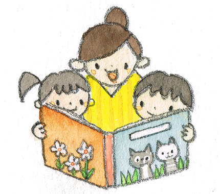
乳児さん、2歳児さん、年少さん、年中さん、年長さん･･･各学年の年齢に合わせて丁寧に環境を整えています。年齢によって子どもの発達は異なります。先生たちの温かな関わりの中で、子ども達は安心して過ごし、段々とお友達関係が広がっていきます。お友達との関わりの中で、社会性を身につけ、より自分らしさを発揮できるようになっていきます。
また、延長保育も行っており、異年齢の子ども達が集まり、お家のような、ゆったりとした環境の中で過ごします。
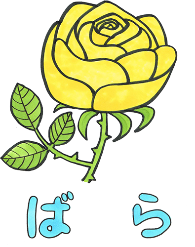
ばら組（5歳児）の年長さんのクラスです。幼稚園の中で一番のお兄さんお姉さんになります。
年長までに培った経験をペア活動を通して下の子のお世話という形で発揮し、一緒に成長していきます。
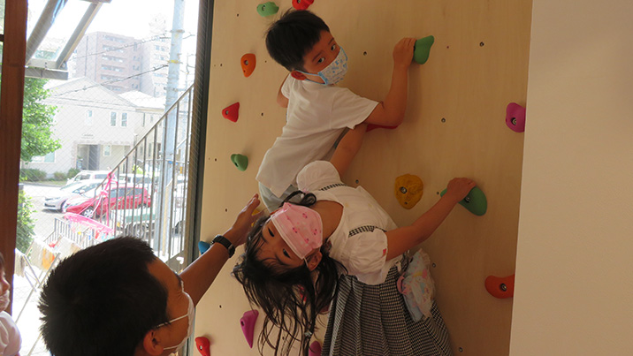
年長さんのお部屋だけ特別☆こんなに楽しい遊具があるの
お部屋でもいつでも汗だく！
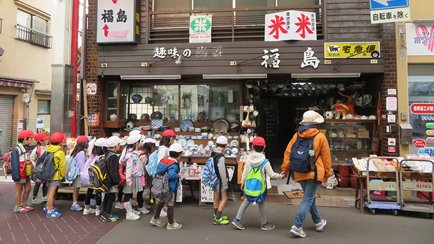
幼稚園の近くを並んでお散歩
「へぇ～こんなお店があるんだね～」
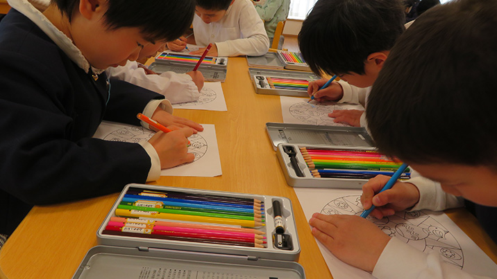
細かなぬりえも、色鉛筆で丁寧に
時間をかけて仕上げていくことが出来ます
○・△･□･◊…いろいろな形を組み合わせて、素敵な作品を作るよ
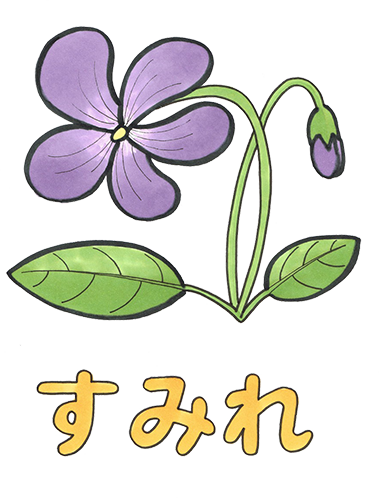
すみれ組（4歳児）の年中さんはお友達と親しみ、関わりを深めていきます。
遊びの中で協力したり、工夫したりして一緒に活動する楽しさを味わいます。お友達に対しても愛情をもって接する関係を築いていきます。
「せんせ～い！おさえておいてね！」
カプラを高く高くつんでいくよ
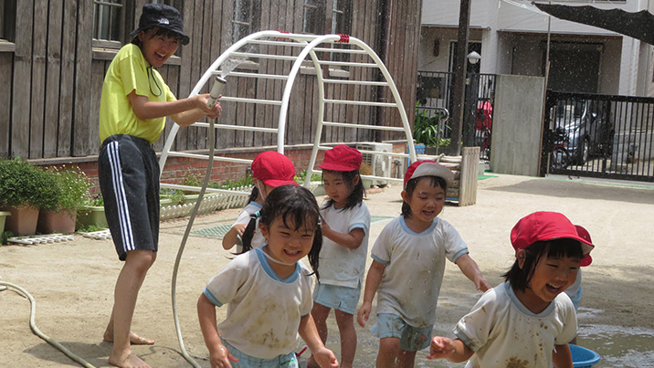
水がかかっても泥んこになっても平気だよ
このニュルニュルが気持ちいいんだ！
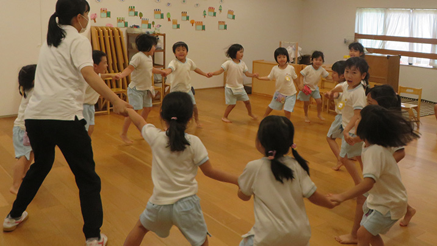
手を繋いで輪になってリズム遊び♪
みんなで一緒なのって楽しいね
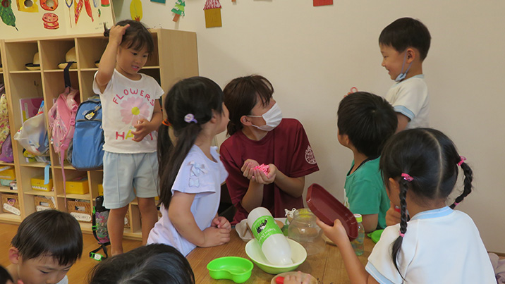
おままごとコーナーはいつも大にぎわい
お客様にごちそうを出さなきゃ☆
もも組（3歳児）の年少さんは大人の手を借りなくても「自分でやる」「何でも自分でできる」という気持ちが強くなります。その主体性を大切にしながら、先生と一緒に社会生活を学び成長していきます。
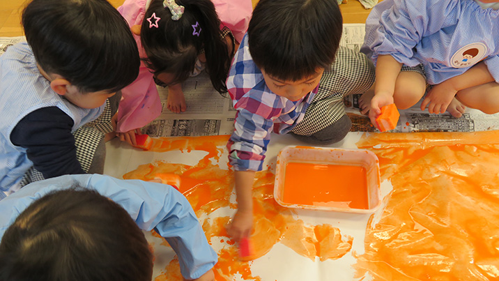
おててに絵の具をつけてぺたぺた
身体を使いダイナミックに表現します
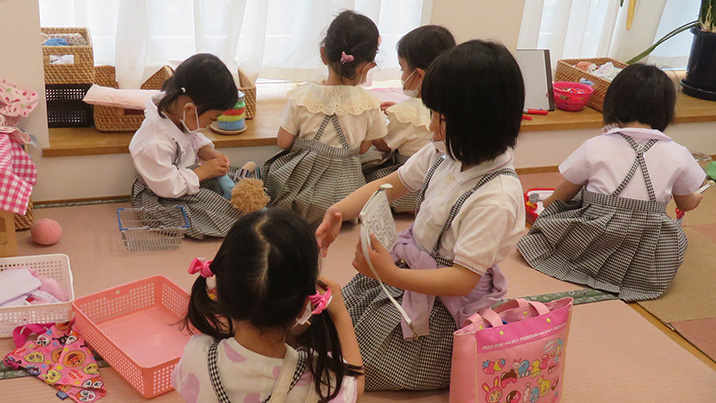
お日さまが差し込んで、ほんわかした
おままごとコーナーはみんな大好き♡
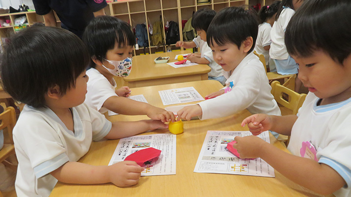
折り紙って不思議～！折っていくと
おいしそうなトマトができちゃった！
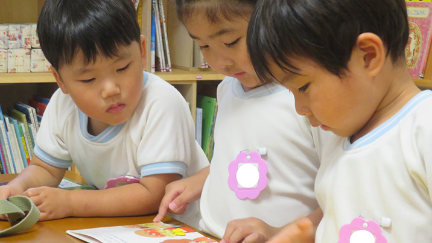
絵本大好き！絵本の世界に入り込むと
こんなに真剣な表情になります
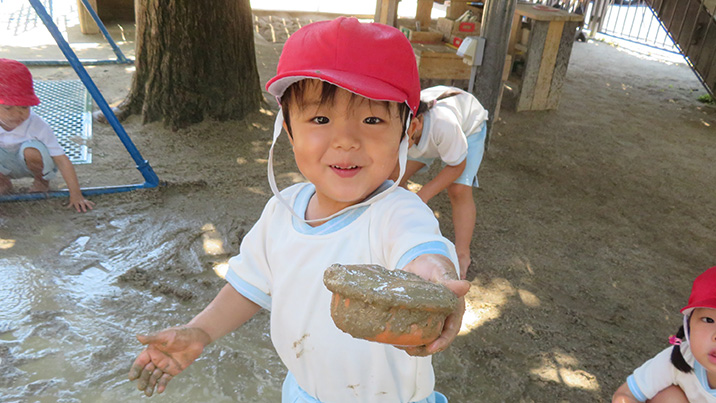
おいしいケーキ召し上がれ！
にっこり笑顔で泥んこ遊びを楽しみます

ももプチ組（2歳児）では、幼稚園に行きたい・遊びたいという気持ちを大切に、一人ひとりの子どもの成長に合わせて、お家の方のニーズに合わせたコースを設定しております。
こひつじ組やももキッズさんと交流しながら、もも組、すみれ組、ばら組のお兄さん、お姉さんとも関わり合って共に大きくなってほしいと考えています。
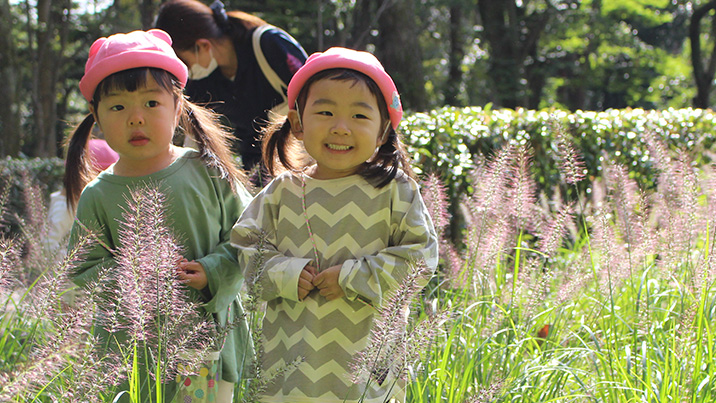
大好きなお友達と一緒だと安心♡
どんなときも一緒にすごそうね！
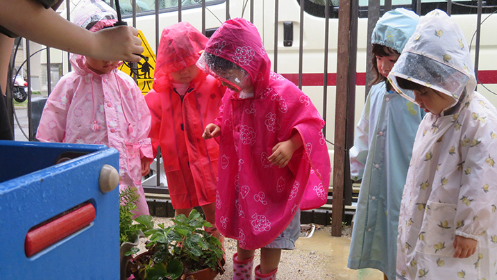
かっぱを着て雨の日のお散歩
みんなてるてる坊主さんみたいで可愛いね
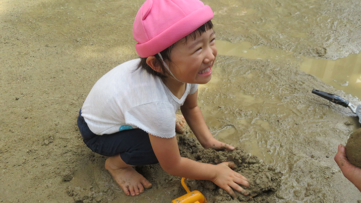
泥んこの中に入ってにっこり！
心も身体も解放してめいっぱい楽しむよ！
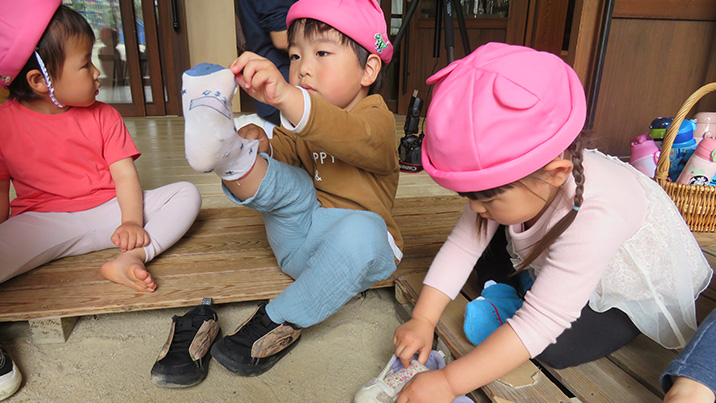
「自分で、自分で…」先生達の温かな眼差しに
見守られて思う存分挑戦できるよ
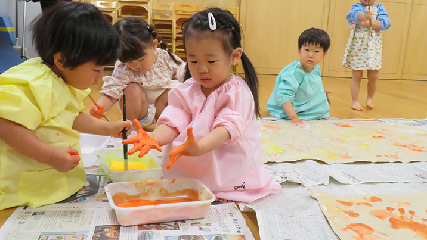
何にでも興味津々。幼稚園に来れば、発見の毎日。
それが積み重なって経験になります！
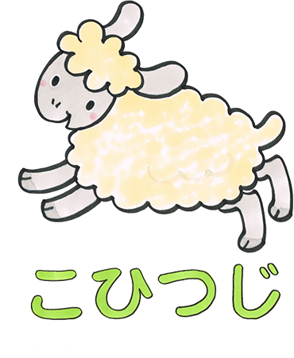
こひつじ組（1歳児）は、園の3階部分に専用の保育室と屋上園庭があります。
専用のおもちゃや遊具で遊び時には近くの公園でお散歩し、自然とふれあいながら成長していきます。
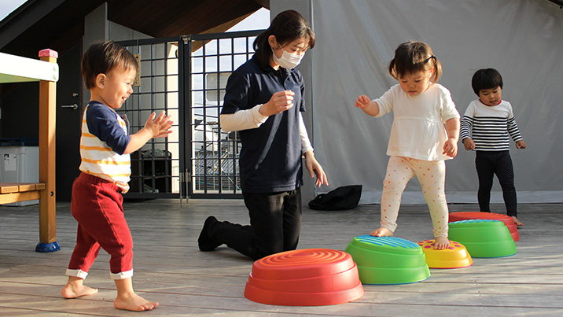
「屋上園庭」はこひつじさんだけの特権♡
いつでものんびり遊べます
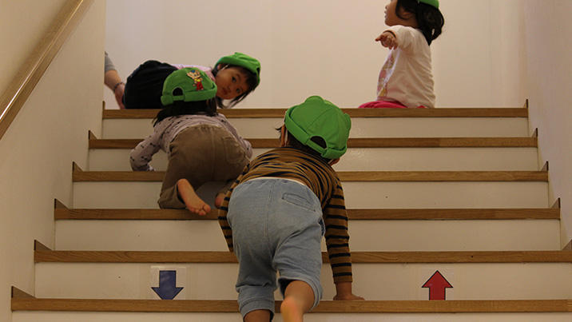
階段のお山登り。はいはいで登って降りて…
毎日することで体幹がしっかりと育ちます
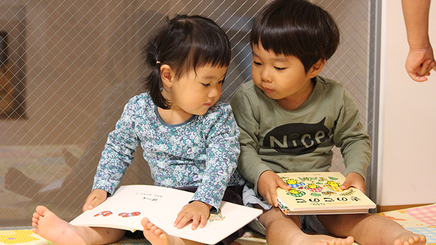
こんなに小さな時からお友達の存在を意識し、
言葉がなくても関わることができます
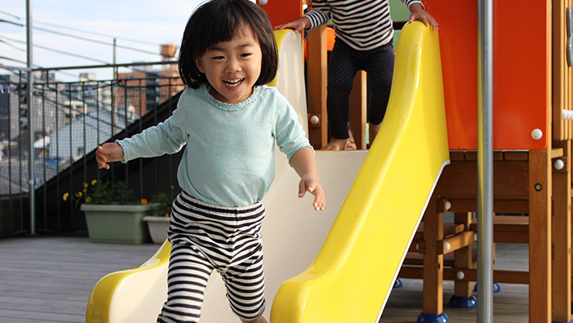
すべりだいって気持ちいいね！
風を肌で感じながら笑顔いっぱい！
たくさん遊んでたくさん食べてお腹いっぱい
みんなで夢の中…ゆっくりおやすみ☆
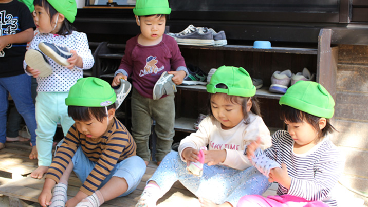
小っちゃくたって自分で靴はけるんだもん！
乳児さんの時から自立心が芽生えます
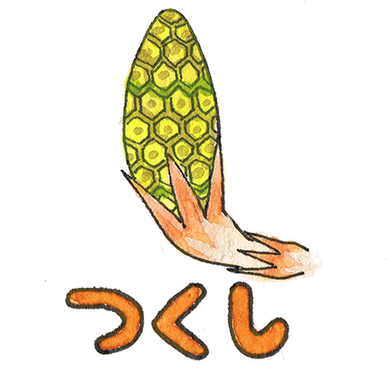
つくし組は、延長保育のクラスです。預かり保育・延長保育を受けられるももプチ組・もも組・すみれ組・ばら組が対象です。
15時ぐらいにはお腹が空くのでおやつを用意しています。絵本を読んだり、外で遊んだり、おうちの様にのんびり過ごします。
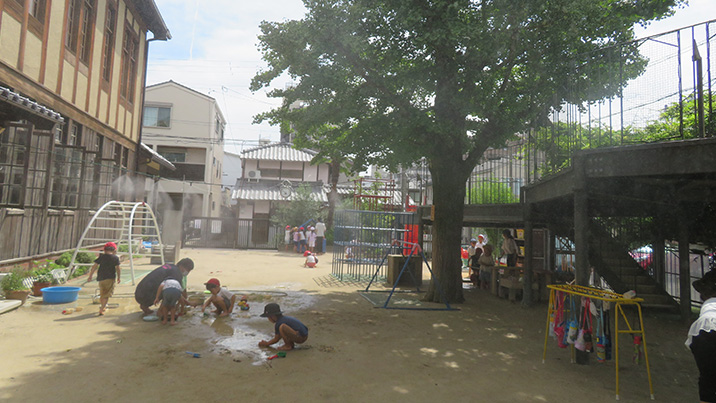
広ーい園庭をつくしさんが独り占め！
思い思いに…でもみんなで混じって遊ぶよ
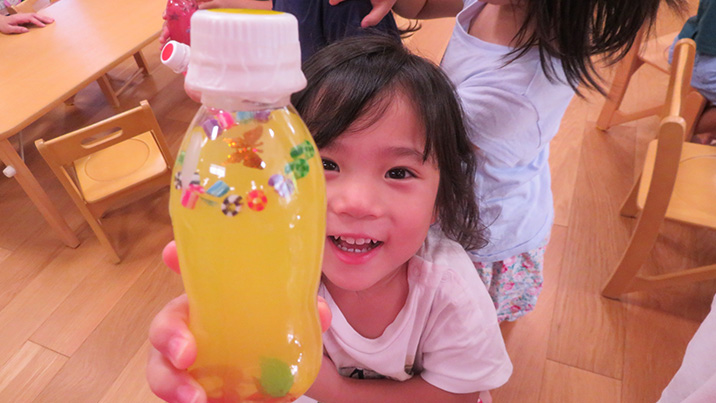
「おいしいジュースができたよ！！！」
楽しい簡単な制作遊びをすることもあります
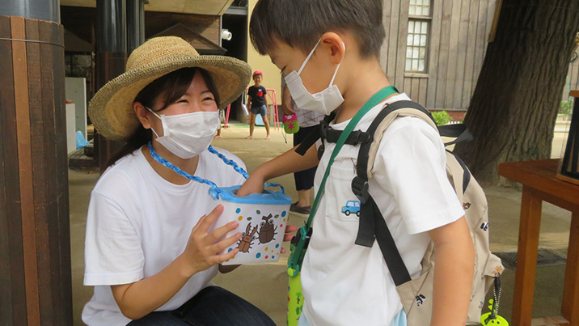
「なにがでるのかドキドキしちゃう～」
たまにはこんなお楽しみの日も☆
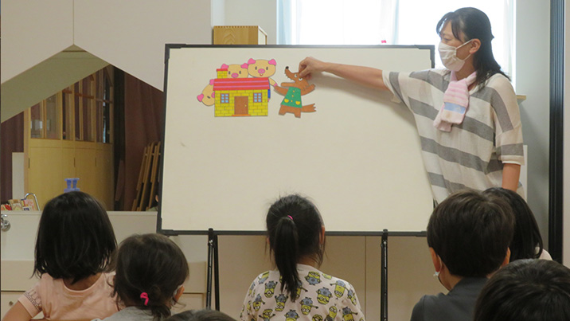
絵本だけではなく、パネルシアターや
エプロンシアターを見ながらゆっくり